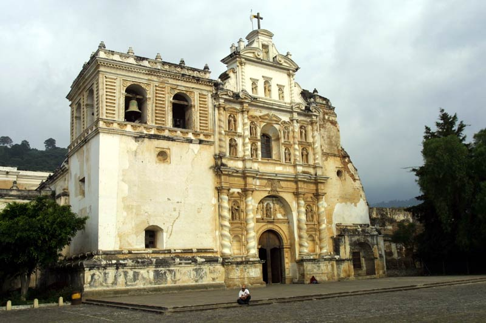
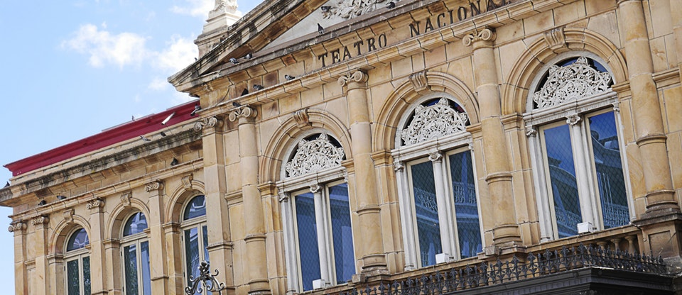
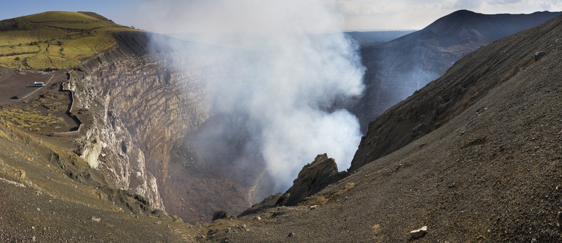
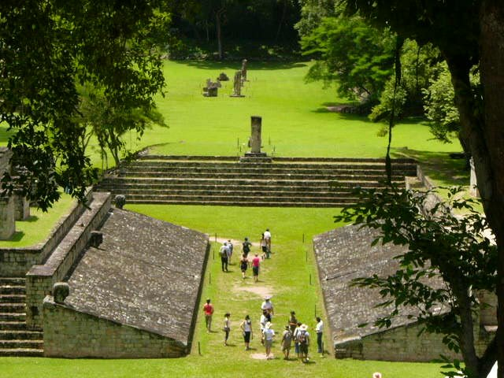
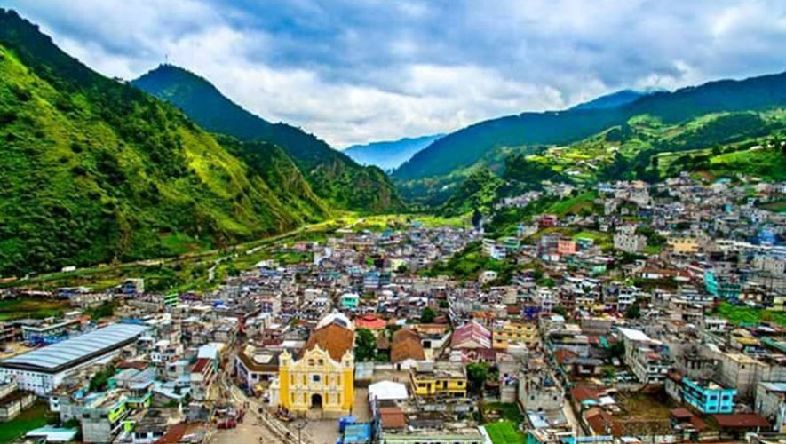

-
Iglesia y Convento de Santo Domingo$125Antigua, GuatemalaEntrada a Museos Casa Santo Domingo, Lago Atitlán y Palopo de San Antonio que incluyen un paseo en tuk-tuk y Volcan de Agua y El Hato desde Antigua
-
Teatro nacional$222San José, Costa RicaEntrada al Teatro Nacional de Costa Rica y visita guiada y Parque Nacional Tortuguero y
-
Parque Nacional Volcán Masaya$116NicaraguaTour nocturno al volcán Masaya, Tour de lava volcán masaya y Tour privado al volcán Masaya por la noche.
-
Ruinas del sitio arqueológico de Copán$126HondurasMuseo de esculturas y una cafetería y una tienda de regalos. Caminatas por el parque, exploración de tumbas, entre otros
-
Cofradia San Simón$116GuatemalaTour a las aguas termales de Georgina desde Quetzaltenango, Fuentes Georginas Hot Springs de Quetzaltenango y Tour a pueblos nativos alrededor de quetzaltenango.
-
Reserva Marina Hol Chan$216BeliceTour de snorkel en la reserva marina Hol Chan y en el callejón Shark Ray.